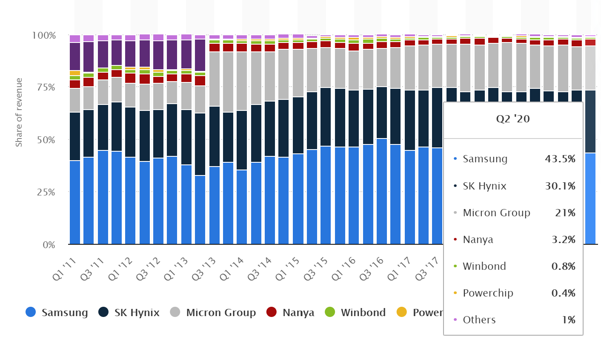
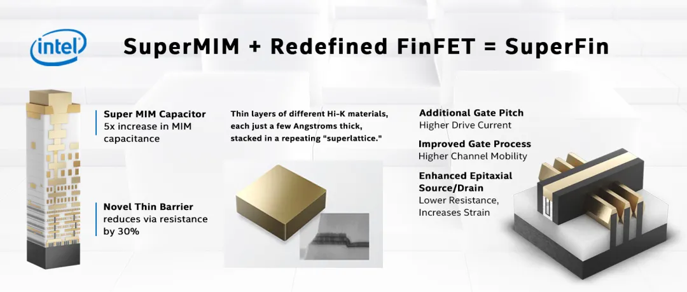

Market Trends
1.DRAM Revenue Rises by 15.4% in 2Q20, with Possible Decline in Prices Expected for 3Q20(TrendForce 2020-08-19)
The last cyclical upturn in DRAM contract prices began at the start of 2020 and was led by server DRAM, according to TrendForce’s latest investigations. In 2Q20, the emergence of the COVID-19 pandemic shocked the global economy, but OEMs maintained or even stepped up procurement of components because they feared disruptions in the supply chain. As a result, DRAM suppliers’ bit shipments surpassed expectations for the quarter, in turn widening the overall increase in DRAM ASP and raising the global DRAM revenue by 15.4% QoQ in 2Q20 to US$17.1 billion.
Nevertheless, TrendForce indicates that server OEMs are now carrying a rather high level of DRAM inventory after aggressively stocking up for two consecutive quarters. At the same time, customers of enterprise servers are holding back on procurement because the economic outlook is getting bleaker and more uncertain. Since server DRAM has the unique role of leading cyclical changes, this category is going to be first to experience price drop in the next downturn and thereby pull prices down for other types of DRAM products. As such, TrendForce forecasts at best a flattening of product shipments and decrease in DRAM prices in 3Q20, with DRAM suppliers suffering a decline in profitability.
…………
2020年第二季DRAM总产值季增15.4%，然第三季价格恐反转向下(集邦资讯 2020-08-19)
根据TrendForce集邦咨询旗下半导体研究处表示，2020年初在Server DRAM价格强势领涨的带动下，各类DRAM价格正式翻扬；即便新冠肺炎疫情在第二季开始蔓延全球，但采购端因担忧零部件断货，并未减少原本预估的订单量，使DRAM供应商出货量优于预期，进一步激励整体DRAM价格涨幅扩大，推升第二季DRAM总产值至171亿美元，季成长15.4%。
TrendForce集邦咨询并指出，经过连续两季的拉货后，Server业者库存水位已逐渐攀升，在整体经济仍处低潮的情况下，以Enterprise Server为首的采购动能开始转趋保守。在DRAM产业由Server领涨领跌的趋势下，恐带动其他产品价格一并反转向下。因此预估第三季将出现量平价跌走势，DRAM原厂获利能力将转弱。
…………
2.DRAM Module Revenue Decreases by 3% YoY in 2019, with Varying Performances by Top 10 Module Makers(TrendForce 2020-08-26)
The massive drop-off in DRAM quotes in 2019 culminated in a total yearly decline of more than 50%, which led to revenue losses for most module makers in 2019, according to TrendForce’s latest investigations. However, Kingston’s growth against the downtrend served as the saving grace for the module industry, which registered yearly revenue of US$16.1 billion in 2019, a mere 3% decrease YoY.
According to TrendForce, an analysis of 2019 price trends shows that the rapid decline of DRAM prices in 1H19 took place because DRAM inventory levels on both the client side and the supply side had reached a relative peak by the end of 2018, with the overall momentum of DRAM procurement gradually weakening, as first shown by server manufacturers. Furthermore, the client side’s yearlong effort in inventory reduction resulted in a constant downward pressure on DRAM prices and frequent reports of price drops, in turn damaging the revenue performances of many module makers. Even so, a few select module makers emerged from these dire circumstances and increased their revenues against the downtrend via developing new commercial opportunities.
…………
2019年DRAM模组总营收年减3%，前十大模组厂表现互有消长(集邦咨询 2020-08-26)
根据TrendForce集邦咨询旗下半导体研究处表示，2019年DRAM报价大幅下滑，全年累计跌幅超过五成，使大多数模组厂去年营收呈现下滑态势，但在金士顿(Kingston)逆势成长的拉抬下，2019年全球模组市场整体销售额达161亿美元，仅年减3%。
回顾2019年价格走势，TrendForce集邦咨询指出，由于2018年底客户端与DRAM供应商的库存水位皆达到相对高点，以服务器为首的采购动能转弱，导致DRAM价格在2019上半年快速滑落。此外，客户端花费一年的时间去化库存，使得DRAM价格全年有压、降价情况频传，多数模组厂的营运受到拖累。然而，在市况不佳的情况下，仍有少部分模组厂开拓新的营运商机，带动业绩逆势上扬。
…………
3.Despite Rebounding DRAM Spot Prices, Downward Pressure on Prices May Persist in 2H20(TrendForce 2020-09-02)
Spot prices have risen for certain types of memory chips recently, leading to significant market speculations on whether the entire memory industry could see a turnaround in the near future.
TrendForce’s current observations of the DRAM market indicate that consumer DRAM accounts for only 8% of the overall DRAM market’s bit consumption. As such, even though consumer DRAM prices have been fluctuating, movements in contract prices of DRAM products will generally be dictated by changes in the inventory levels of suppliers and buyers and by the recovery of purchasing momentum for mainstream server DRAMs. DRAM prices will be under downward pressure until data centers and buyers of enterprise servers restart their inventory-building procurement. Hence, the recent rebound in spot prices is likely a mere temporary phenomenon.
Consumer DRAM has the strongest demand momentum as its QoQ decline in 4Q20 is expected to narrow down to within 5%
…………
DRAM现货价格出现久违涨势，但下半年DRAM价格仍有压力(集邦咨询 2020-09-02)
近期现货渠道有部分存储器颗粒现货价格上涨，引发市场高度关注是否会带动存储器产业反转向上。
TrendForce集邦咨询旗下半导体研究处表示，观察目前DRAM市场，consumer DRAM仅占整体DRAM市场消耗量约8%，即便consumer DRAM出现价格波动，合约市场涨跌的关键仍在于供需双方的库存水位，以及主流server DRAM的采购动能何时回温。在data center与enterprise server业者尚未重启新一轮补货前，DRAM价格压力仍在，现货价格反弹可能仅是短暂效应。
Consumer DRAM拉货动能强劲，季跌幅缩小至5%以内
…………
4.Persistently Strong Demand for Graphics Card to Drive up Graphics DRAM Prices in 4Q20(TrendForce 2020-09-03)
The global spread of the COVID-19 pandemic has resulted in WFH and distance education becoming the new tenets of everyday life, according to TrendForce’s latest investigations. The resultant booming stay-at-home economy has not only galvanized an explosive double-digit growth for NB (notebook computer) shipment this year, but also benefitted the graphics card market, whose remarkable shipment performance that began in 2Q20 is expected to persist in 2H20.
The highlights for the graphics card industry this year consist of NVIDIA’s recently announced Ampere cards and AMD’s Big Navi, which will be released in 4Q20. Graphics card manufacturers have obtained the new reference graphics cards from NVIDIA, and they are currently implementing verification and testing. If manufacturers can complete these processes and release the cards to the market on schedule, the positive outlook of the graphics card market will likely continue throughout 4Q20. In terms of graphics DRAM, the new cards are equipped with more content per box (DRAM capacity) compared with the previous generation. The simultaneous increase in shipment quantity and content per box will potentially stop the price drop for graphics DRAM ahead of other DRAM products.
…………
显卡需求续强，Graphics DRAM第四季价格易涨难跌(集邦咨询 2020-09-03)
根据TrendForce集邦咨询旗下半导体研究处表示，2020年新冠肺炎疫情蔓延全球，发展出远端工作与教育的新生活型态，加上在家防疫带动宅经济需求提升，不仅使笔记本电脑拉货动能爆发，全年度出货量也可望达双位数正成长，显卡需求也连带受惠，出货表现自第二季起将持续畅旺至下半年。
今年显卡亮点在于NVIDIA近日发布的Ampere，以及第四季将问世的AMD BIG NAVI。目前板卡厂正积极验证与测试NVIDIA新产品公板，若验证时程与发表进度皆如期完成，预期第四季显卡市场将维持正向表现；而其中搭载的graphics DRAM容量也较前一代增加，数量与容量同步看增，将有机会带动graphics DRAM价格提早止跌。
…………
5.DRAM chip market share by manufacturer worldwide from 2011 to 2020(Statista 2020-08-24)
In the second quarter of 2020, Samsung held a market share of 43.5 percent, a slight fall from the 44.1 percent share that the company occupied in the first quarter of 2020.
COVID-19 impacts
Overall DRAM revenues amounted to 17.11 billion U.S. dollars for the second quarter of 2020, up from the 14.82 billion U.S. dollars observed in the first quarter of 2020. As the source suggests, the impacts of the coronavirus (COVID-19) outbreak were considered by OEMs, with many keeping or upping their procurement of components due to supply chain disruption fears.
DRAM vs SRAM
The primary memory of a computer is called RAM, with the two most used forms of modern RAM being static RAM (SRAM) and dynamic RAM (DRAM). DRAM is a type of volatile memory which, unlike non-volatile flash memory, loses data quickly when cut off from a power supply. Compared to other varieties of volatile memory, DRAM is relatively structurally simple. Whereas SRAM requires four to six transistors per bit, DRAM requires only one transistor and capacitor per bit. The global DRAM market generates over 15 billion U.S. dollars each quarter, with Samsung being the largest manufacturer of DRAM in terms of revenues.

Vendor News
1.Samsung Begins Mass Production of 16Gb LPDDR5 DRAM at World’s Largest Semiconductor Line(Samsung 2020-08-30)
…………
“The 1z-based 16Gb LPDDR5 elevates the industry to a new threshold, overcoming a major developmental hurdle in DRAM scaling at advanced nodes,” said Jung-bae Lee, executive vice president of DRAM Product & Technology at Samsung Electronics. “We will continue to expand our premium DRAM lineup and exceed customer demands, as we lead in growing the overall memory market.”
Based on today’s most advanced (1z) process node, Samsung’s new 16Gb LPDDR5 is the first memory to be mass produced using EUV technology, providing the highest speed and largest capacity available in mobile DRAM.
At 6,400 megabits per second (Mb/s), the new LPDDR5 is about 16 percent faster than the 12Gb LPDDR5 (5,500Mb/s) found in most of today’s flagship mobile devices. When made into a 16GB package, the LPDDR5 can transfer about 10 5GB-sized full-HD movies, or 51.2GB of data, in one second.
Thanks to its use of the first commercial 1z process, the LPDDR5 package is 30 percent thinner than its predecessor, enabling 5G and multi-camera smartphones as well as foldable devices to pack more functionality into a slim design. The 16Gb LPDDR5 can build a 16GB package with only eight chips, whereas its 1y-based predecessor requires 12 chips (eight 12Gb chips and four 8Gb chips) to provide the same capacity.
…………
三星宣布於全球最大的半導體生產線 正式啟動16Gb LPDDR5 DRAM的量產作業(三星 2020-08-30)
…………
三星電子DRAM產品與技術執行副總裁Jung-bae Lee表示：「基於1z製程的16Gb LPDDR5，克服DRAM在先進製程節點擴充的主要開發障礙，將產業技術推升至全新高度。三星以業界領頭羊之姿，推動整體記憶體市場的成長，我們將繼續擴大領先DRAM產品陣容，超越客戶的期望。」
基於現今最先進的（1z）製程節點，三星新型16Gb LPDDR5是首款使用EUV技術量產的記憶體，以史上最快的速度與最霸氣的容量規格，領先市面上的其它行動DRAM產品。
新型LPDDR5速度可達到每秒6,400 Mb，較現今旗艦級行動裝置的主流規格12Gb LPDDR5（每秒5,500 Mb）提升約16%。建構成16GB封裝時，LPDDR5能在短短一秒的時間內，傳輸大約10部5GB大小的高畫質影片、或51.2GB的數據。
透過全球首創的商用1z製程，LPDDR5封裝體積較前一代縮減30%，進而讓5G和多鏡頭智慧型手機、摺疊裝置，能將更多功能整合至精巧的機身設計中。16Gb LPDDR5只需8個晶片，即可建構16GB封裝，而基於1y製程技術的前一代產品，則需要12個晶片（8個12Gb晶片搭配4個8Gb晶片），才能提供相同的容量。
…………
2.SK hynix restores 30% share in DRAM market(KoreaHerald 2020-08-21)
SK hynix, the world’s second-largest memory provider, restored its share in the global DRAM market with over 30 percent for the first time since the fourth quarter of 2018.
According to data from TrendForce, more than half of the DRAM market was occupied by Korean chipmakers Samsung Electronics and SK hynix in the second quarter of 2020.
Samsung cemented its solid lead with 43.5 percent, followed by SK hynix with 30.1 percent.
SK hynix’s presence in the DRAM market was reduced for the past 1 1/2 years, largely due to falls in price.
…………
3.Toshiba is officially out of the laptop business(The Verge 2020-08-09)
Toshiba quietly exited the laptop business once and for all last week, ending a 35-year run by transferring its remaining minority stake in its PC business to Sharp. Two years ago, Toshiba sold an 80.1 percent stake of its PC business to Sharp for $36 million, and Sharp renamed the division Dynabook. Sharp exercised its right to buy the remaining 19.1 percent of shares back in June, and Toshiba released a statement August 4th that the deal was completed
“As a result of this transfer, Dynabook has become a wholly owned subsidiary of Sharp,” Toshiba said in a statement.
…………
4.东芝正式宣布退出笔记本电脑业务，将剩余PC股份卖给夏普(36氪 2020-08-10)
8月10日，当地时间周一，日本东芝公司正式宣布退出笔记本电脑业务，并将其个人电脑业务剩余的少数股权转让给夏普，从而结束了在个人电脑领域长达35年的拼搏。
两年前，东芝以3600万美元的价格将其个人电脑业务——东芝客户解决方案有限公司(以下简称TCS)80.1%的股份出售给夏普，夏普随后将该部门更名为Dynabok。夏普在6月份行使了购买剩余19.1%股份的权利，东芝在8月初发布了一份声明，称交易已完成。
东芝在声明中称：“东芝特此宣布，已经转让了Dynawok公司19.9%的流通股给夏普公司。此次转让的结果是，Dynabok成为夏普的全资子公司。”
…………
New Technology
1.Intel Architecture Day 2020: Everything You Need to Know(tomshardware 2020-08-14)
Due to the overwhelming amount of information and incredibly short amount of time to parse it, we broke our coverage into a series of articles, with more to come. This article serves as the hub for our coverage, and our articles are linked and listed with a brief synopsis of each relevant announcement below:
Intel’s Tiger Lake Roars to Life: Willow Cove Cores, Xe Graphics, Support for LPDDR5: The Tiger Lake processors that come with Willow Cove cores and a high-powered Xe LP Graphics engine.
Intel Dishes on Alder Lake-S: First x86 Hybrid CPU for Desktops: these new chips are akin to ARM’s big.LITTLE concept of clusters of big, fast cores working in tandem with smaller, more efficient cores. Alder Lake-S marks the beginning of the x86 hybrid era for the desktop PC, and Intel’s Client 2.0 initiative, which we also cover in this article, signals that the company sees this type of architecture as a long-term path forward.
…………
2.英特尔在2020年架构日上展示架构创新以及全新晶体管技术(Intel 2020-08-14)
7在英特尔2020年架构日新闻发布会上，英特尔首席架构师Raja Koduri携手多位英特尔院士和架构师，详细介绍了英特尔在创新的六大技术支柱战略所取得的进展。英特尔推出了10纳米SuperFin技术，这是该公司有史以来最为强大的单节点内性能增强，带来的性能提升可与全节点转换相媲美。
该公司还公布了Willow Cove微架构和用于移动客户端的Tiger Lake SoC架构细节，并首次介绍了可实现全扩展的Xe图形架构。这些创新的架构可服务于消费类、高性能计算以及游戏应用市场。基于英特尔的“分解设计”方式，结合先进的封装技术、XPU产品和以软件为中心的战略，英特尔的产品组合致力于为客户提供领先的产品。
…………

3.10年升级，巨头环伺，新一代内存DDR5有什么不同？(全球半导体观察 2020-08-14)
DRAM动态存储器供货商争相布局，JEDEC固态技术协会发布最终规范，就连向来滞后的终端平台方面也传来利好消息。近段时间以来，新一代主流存储标准DDR5动态更新不断，宣示DDR5时代加速到来。
…………
头号玩家三星电子在今年3月宣布，将于2021年正式开始量产DDR5内存。值得一提的是，三星也率先将EUV工艺带入DRAM内存芯片的生产中。
随后，SK海力士则在4月宣布，将尽力确保今年下半年实现批量生产。SK海力士表示，其开发了业内首个完全符合JEDEC标准的DDR5芯片，容量为16Gb。
…………
英特尔即将发布的Aldar Lake将会继续支持DDR4，而非DDR5。最新消息称，英特尔计划在 2021年初推出Tiger Lake-H 系列产品，预计将支持DDR5内存。
AMD公司在今年下半年发布的Zen3架构的Milan芯片也依然支持DDR4。有业内人士称，支持DDR5的桌面平台Zen4 架构将在2022年问世。
…………